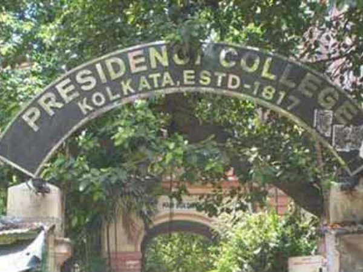
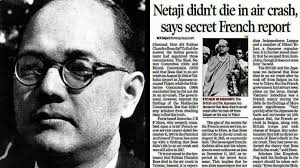
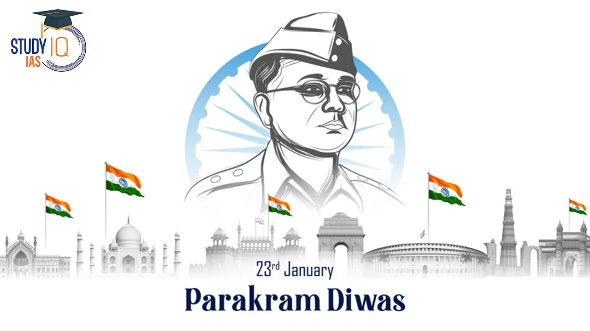

Netaji Subhas Chandra Bose
The Fearless Leader of India's Independence Movement
Tribute to Netaji Subash Chandra Bose by Parambrata Chatterjee :
- Born in Cuttack, Bengal Presidency, British India (now in Odisha, India) on January 23, 1897.
- - Studied at Presidency College, Calcutta, and later at Fitzwilliam College, Cambridge. Bose emerged as a prominent leader in the Indian National Congress during the 1920s and 1930s, He advocated for complete independence from British rule, earning him the nickname "Netaji," which means "Respected Leader." 
- Disillusioned with the Gandhian approach of non-violence, Bose formed the Forward Bloc within the Indian National Congress in 1939. The Forward Bloc advocated for radical means to achieve India's independence, including armed struggle.
- One of Bose's most significant contributions was the formation of the Azad Hind Fauj (Indian National Army or INA) in 1942. He collaborated with the Axis powers during World War II, seeking their support to liberate India from British rule. The INA fought alongside the Japanese forces against the British in Southeast Asia.
- Bose's famous slogan "Jai Hind" and "Inquilab Zindabad" (Long Live the Revolution) galvanized the masses during the freedom struggle. His powerful speeches inspired millions of Indians to join the movement for independence.
- Netaji Subhas Chandra Bose's death remains a subject of controversy and mystery. He reportedly died in a plane crash in Taiwan on August 18, 1945, though many conspiracy theories and claims of survival persist. 
- Netaji's contributions to India's freedom struggle have earned him immense respect and admiration.
- His birthday, January 23rd, is celebrated as "Parakram Diwas" (Day of Valour) in India, honoring his legacy and sacrifice. Numerous statues, memorials, and institutions across India commemorate his life and contributions. 
- Bose's legacy transcends regional and ideological divides. He is revered across India for his unwavering commitment to the nation's freedom, making him a unifying figure in Indian history.
-
"Netaji: The real meaning of 'Fight for Independence'"
To know more about Netaji visit: Wikipedia entry.